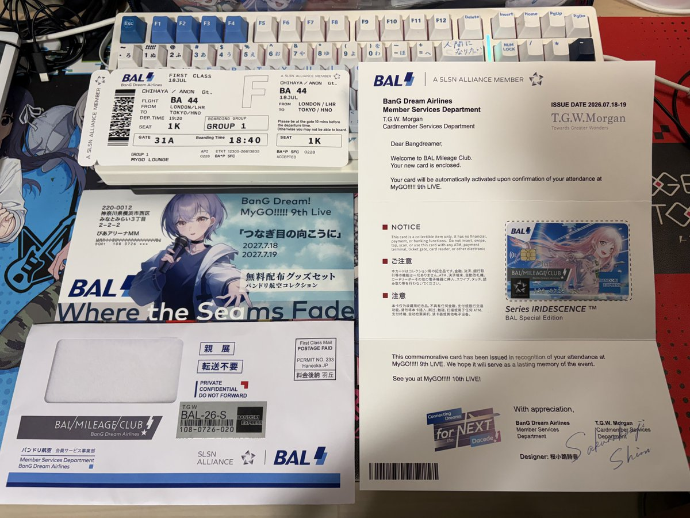

河南说唱之神
@shennaichuan_
@Chiyorin8964 @A_Schenberg @Nai_bao_ @Yuiko114514 @YokAza1221 whxmn

千世Chiyo
@Chiyorin8964
这两天在场馆外收获了好多老师精心制作的高质量无料
P1: @A_Schenberg 老师制作的的邦多利航空会员卡
P2: @Nai_bao_ 老师制作的爱音小毛巾
P3: @Yuiko114514 老师制作的go团小卡
P4: @YokAza1221 老师制作的上陆（迷子许可和小立牌
感谢大佬们倾情制作与分享😽 https://t.co/vDumXn8f7a